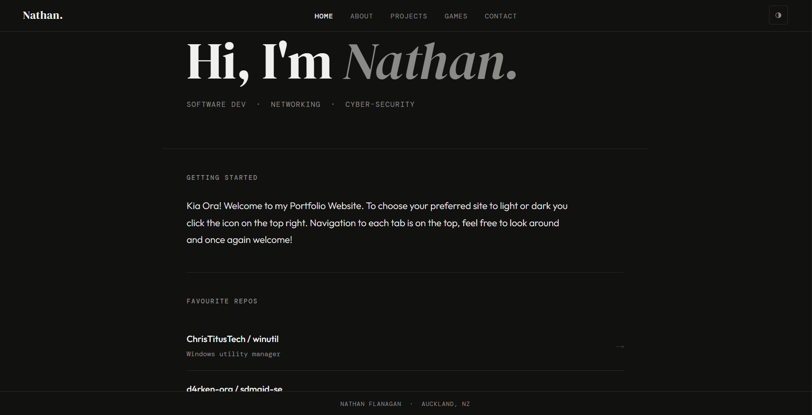
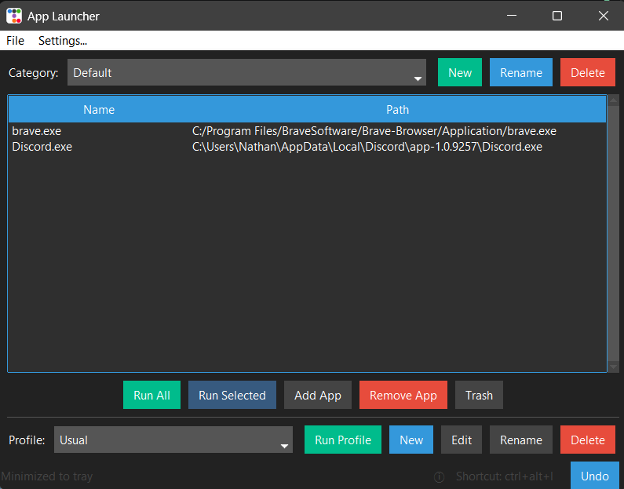
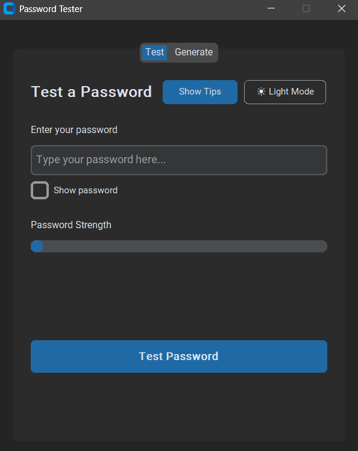
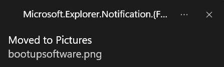

Portfolio Website
This site — a vanilla HTML, CSS & JS portfolio with a shared navbar component, a custom light/dark theme built on CSS variables, and a few browser mini-games, hosted on GitHub Pages.
View on GitHub →
This site — a vanilla HTML, CSS & JS portfolio with a shared navbar component, a custom light/dark theme built on CSS variables, and a few browser mini-games, hosted on GitHub Pages.
View on GitHub →
A Windows desktop app for grouping installed programs into categories and launch-ready profiles, so a whole set of apps opens with a single click instead of launching each one by hand. Settings persist to a JSON config with automatic migration from older versions, and an in-memory undo history lets you recover accidentally removed entries.
View on GitHub →
A desktop password strength checker and generator. Alongside local complexity checks
(length, character diversity), it checks entered passwords against the Have I Been Pwned
breach database using k-anonymity — hashing the password locally and sending only the
first 5 characters of that hash, so the real password never leaves the machine. Also
generates cryptographically secure passwords via Python's secrets module.

A Windows system tray utility that watches the Downloads folder in real time and automatically sorts new files into category subfolders (Pictures, Documents, Videos, etc.) based on file extension, with OneDrive-aware routing. Includes an undo history for the last 20 moves, native Windows 11 toast notifications, and a settings window for customizing file-type rules without touching a config file directly.
View on GitHub →A live look at my public GitHub activity.